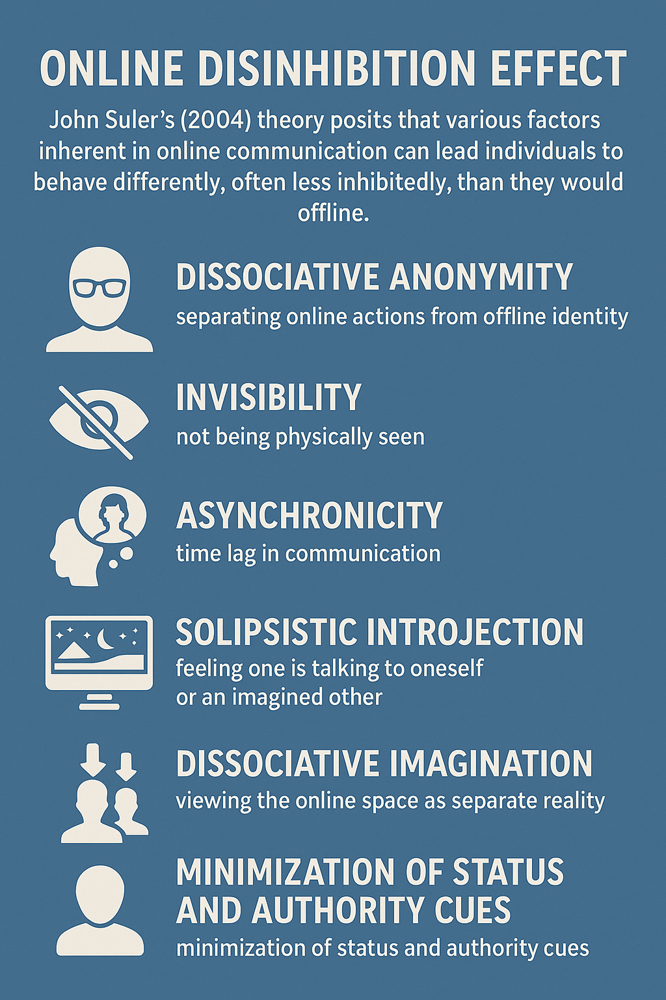
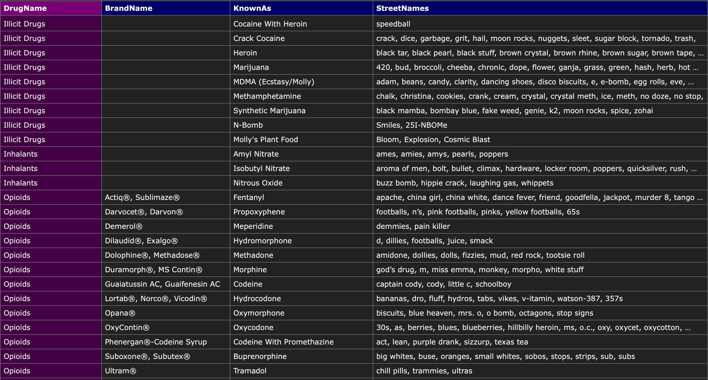
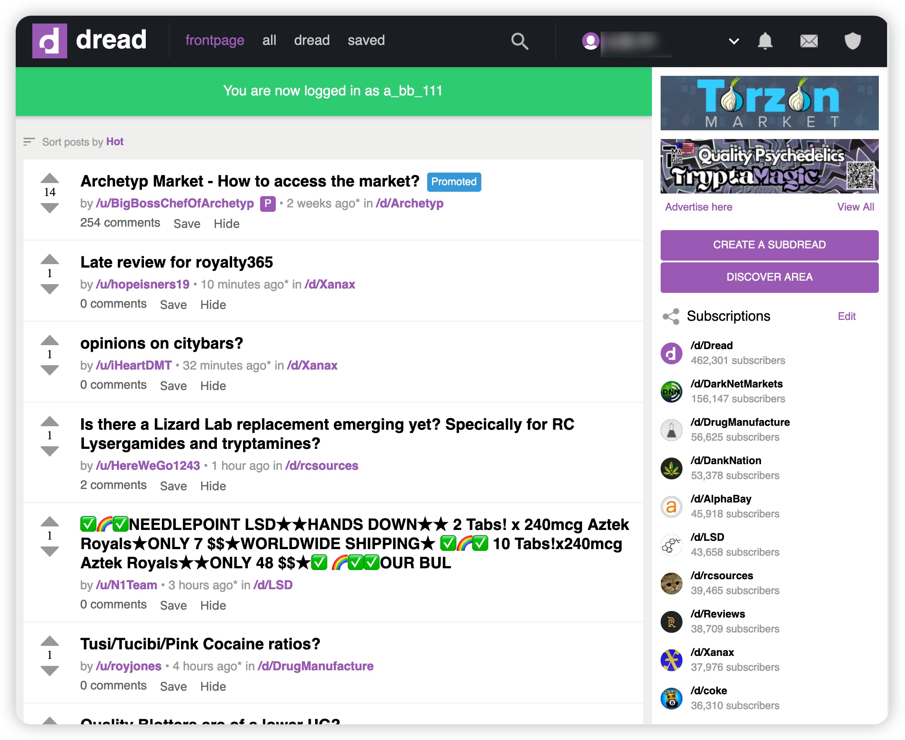
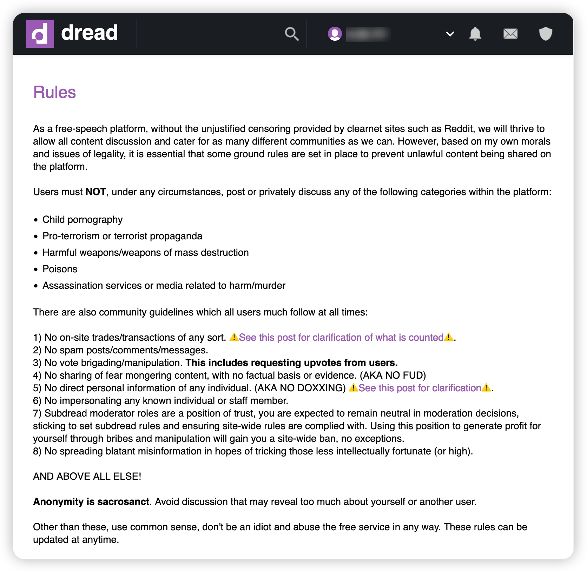
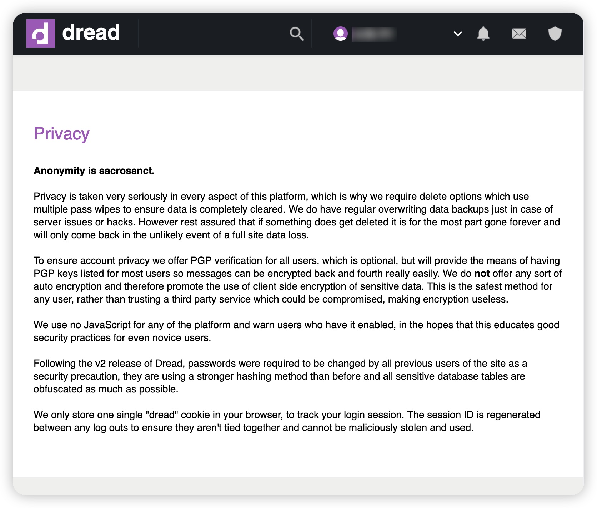
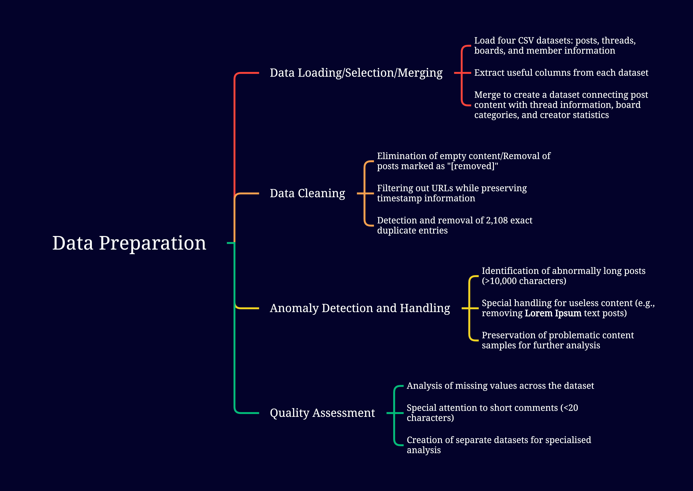
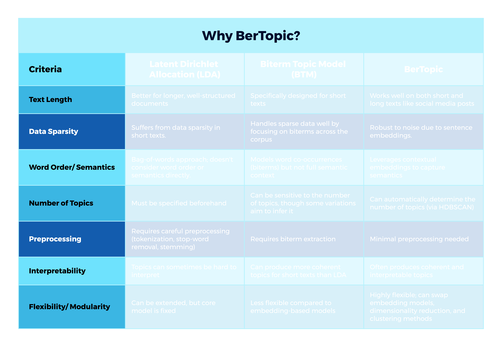
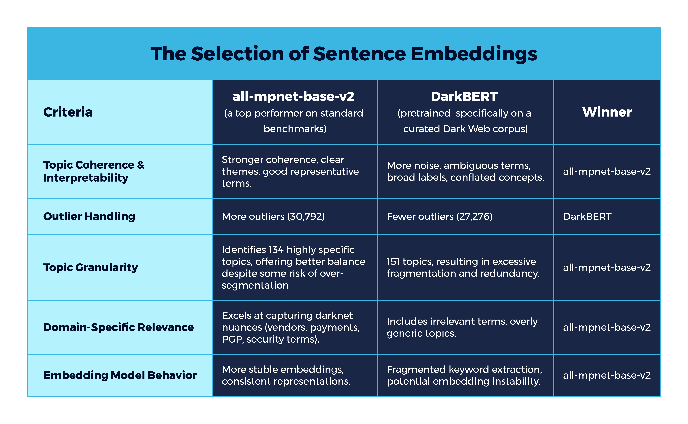
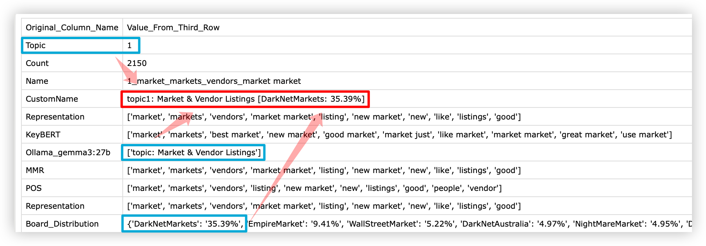
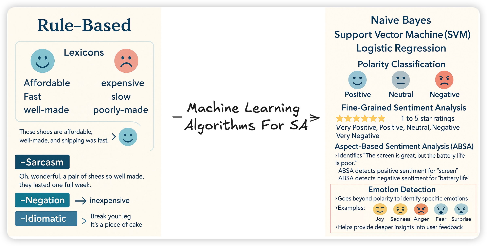

Evaluating the Impact of Anonymity on Emotional Expression in Drug-Related Discussions
A Comparative Study of the Dark Web and Mainstream Social Media
Presentation Outline
- Introduction & Literature Review
- Research Questions
- Methods
- Primary Findings
- Implications for Law Enforcement and Harm Reduction Intervention
- Conclusion with Comparison
- Limitations
Introduction & Literature Review
Defining Self-Disclosure & Emotional Disclosure
Self-disclosure: Voluntary revealing personal information (self, inner states, feelings, opinions). Fulfills needs like sharing, self-awareness, catharsis, and builds intimacy/trust (Hollenbaugh & Everett, 2013; Clark-Gordon et al., 2019; Mufarreh, 2023).
- Dimensions: Amount(quantity of information shared), Breadth(range of topics discussed), Depth(intimacy or sensitivity of the information revealed).
Emotional disclosure: focusing on communicating feelings and emotional experiences. Significant for processing experiences, seeking validation, and eliciting empathy (Malloch et al., 2019).
Environmental influence: Disclosure patterns are shaped by communication medium, perceived risks, and anonymity levels. While research indicates a willingness to disclose stigmatised conditions (e.g., depression) in supportive online environments(Moreno et al., 2011), discussions of illegal activities like drug use may involve greater legal risks, prompting more cautious disclosure behaviours.
The Internet: A Venue for Sensitive Discussions
The internet has become a primary venue for discussing sensitive topics like bipolar disorder(Jagfeld et al., 2023; Marshall et al., 2024), depression(Desjarlais, 2019; Kornfield, 2018; Lotay, 2016), and experiences with substance use and addiction(Barratt, 2011; Blankers et al., 2019; Duxbury, 2018; Kornfield et al., 2018).
Contributing Factors:
- Accessibility: Overcomes geographical limits, connects isolated individuals (Desjarlais, 2019; Kornfield et al., 2018; Marshall et al., 2024).
- Specialised Communities: Fosters belonging and shared understanding (Barratt, 2011; Cho and Wright, 2019; Marshall et al., 2024).
- Asynchronous Nature: Allows careful formulation of thoughts (Kornfield et al., 2018).
- Anonymity/Pseudonymity: Reduces fear of judgment and stigma, especially crucial when in-person support is limited (e.g., pandemics) (Valdez et al., 2022).
Anonymity's Role in Sensitive Disclosure
Anonymity/pseudonymity online facilitates self-disclosure on sensitive topics by:
- Reducing perceived risks (social judgement, reputational damage, legal repercussions) (Barratt, 2011; Cho and Wright, 2019; Kornfield, 2018; Lotay, 2016)
- Reduced face-to-face restrictions (Desjarlais, 2019; Ibrahim et al., 2022)
- "Stranger on a train" effect (Hollenbaugh and Everett, 2013, p. 283)

The Multifaceted of Anonymity
Visual Anonymity
Invisibility increases self-disclosure (Suler,2004)
Paradox: Visually identified bloggers disclosed more information (Hollenbaugh & Everett, 2013)
Limitation: Hinders trust formation (Campbell & Wright, 2002)
Discursive Anonymity
Real names reduce offensive language (Omernick & Sood, 2013)
Chinese Forum: Less anonymous users produced more content (Wallin, 2014).
Motivation Effect: High anonymity can discourage contributions (Cho & Acquisti, 2013).
Perceived Anonymity
Subjective feeling of identifiability (Yun, 2006)
Social Information Processing theory: higher perceived anonymity might decrease public disclosure, as it can hinder the development of interpersonal connections (Yun, 2006)
Context-dependent: Varies by platform purpose
Technical vs. Social
Technical: System features
Social Identity Model of Deindividuation Effects: anonymity can strengthen group cohesion, foster adherence to community norms (e.g., harm reduction practices), and encourage identity expression aligned with the group (Soussan, 2018)
The Dual Nature of Anonymity's Impact on Emotional Expression
General Online Environments
↑ Disinhibited Negative Expression
- More critical comments
- Increased swear words & anger
- Overall negativity compared to identified comments
- Platforms shifting to identified systems saw ↓ negative comments (Omernick & Sood, 2013)
Support Communities
↑ Vulnerable Emotional Disclosure
- Open discussion of anxiety, sadness, distress
- Seeking empathy and support (Lotay, 2016)
- Reddit mental health subreddits show more vulnerability (Jagfeld et al., 2023)
- Creates safe space for help-seeking
Key Insight:
Context and user intent are critical. Anonymity may disinhibit negativity in public forums, but in supportive environments, it primarily creates safe spaces for vulnerability. Platform purpose and community norms strongly shape how anonymity influences emotional disclosure.
Research Questions
Primary Research Questions
- How do different models of anonymity—pseudonymity on Telegram versus technical anonymity on Dread—shape the function and intensity of emotional expression in discussions of sensitive topics?
- What distinct communication styles emerge on pseudonymous and anonymous platforms, and how are these styles adapted to serve specific community functions, such as identity formation, transactional efficiency, and harm reduction?
- How do the emotional landscapes of drug-related discussions differ between a pseudonymous social platform (Telegram) and an anonymous marketplace forum (Dread), particularly concerning trust, hostility, and vulnerability?
- In what ways can the analysis of emotional signatures and adaptive communication patterns on these platforms provide actionable intelligence for law enforcement and targeted strategies for harm reduction interventions?
Methods
- Datasets: Telegram & Dread
- Data Preparation
- Topic & Emotion Analysis
Datasets Used
- crimebb-dread-2023-06-21 (446 boards, 75,122 threads, and 294,596 posts)
- telegram-2023-03-24 (416 channels with 9,787,885 messages and 4,071,094 replies)
Identifying Channels with Drug-Related Discussions in Telegram
Challenge:
- Which of the 416 Telegram channels scraped are drug-related?
Solution:
- Comprehensive Drug Terminology Collation through web scraping
- Employed regular expression to match messages against compiled drug-related terms
- Word Frequency Analysis and Channel Identification
Drug discussion channels:
- Kiwifarms Transit Commission (id: -1001216292998)
- 800,142 posts after data cleaning (URLs, empty content, duplicates removed)
Drug Terminology.csv

Dread forum
- What is Dread: Onion-based free speech platform and forum with Reddit-like UI (launched on 16th Feb 2018)
- Forbidden topics: Child pornography, Pro-terrorism or terrorist propaganda, Harmful weapons/weapons of mass destruction, Poisons, Assassination services or media related to harm/murder.
- Anonymity & Privacy:
- Secure Data Deletion:
- Multi-pass wipes ensure data is completely cleared
- Deleted data is largely unrecoverable, even with backups
- User-Controlled Encryption:
- Optional PGP verification for secure user-to-user messaging
- Strong advocacy for client-side encryption (safest method, avoids third-party trust)
- Technical Safeguards:
- No JavaScript: Enhances security and educates users on good practices
- Stronger Password Hashing & obfuscation of sensitive database tables
- Minimal Session Tracking: Single, secure cookie, regenerated on each logout
- Secure Data Deletion:







Configuring Custom Topic Names for Data Analysis

Topic Tree from Dread (n=228)
Topic Tree from Telegram (n=305)
Why Emotion Detection?

Paul Ekman's Six Basic Emotions
- Happiness
- Sadness
- Fear
- Disgust
- Anger
- Surprise

Sam Lowe's model
Cardiff University model
![topic3_ Dark Web Drug Investigations [DarkNetMarkets_ 33.47%]_emotions](image/topic3 Dark Web Drug Investigations.png)
Primary findings from the telegram channel
Pseudonymity as a Catalyst for Emotional Disinhibition
1. Explicit Hate Speech & Slurs (High Disgust + Anger)
- topic0_Racial Slurs & Hate Speech
- topic1_Anti-transgender hate speech
- topic21_Harmful homophobic slurs
2. Targeted Harassment & Doxing (High Disgust + Anger + Sadness)
- topic59_Doxing and Personal Information
- topic171_Harmful Reporting & Slurs
- topic208_Cyberbullying & Bullying Behavior
3. Extremely Taboo/Illegal Content (High Disgust + Anger + Fear)
- topic213_Grooming & Child Exploitation
- topic152_Sexual Assault & Violence
- topic68_Pedophile Accusations & Discussion
4. Severe Self-Harm & Mental Health (High Sadness + Disgust/Pessimism)
- topic122_ Suicidal thoughts and death wishes
- topic284_ Mental Illness Discussion
5. Extremist Ideologies (High Disgust + Anger)
- topic162_4chan & Online Extremism
- topic85_Incel Community & Identity
- topic65_Adolf Hitler and Nazism
6. Bodily Objectification & Fetishism (High Disgust + Anger)
- topic76_Female breasts & anatomy
- topic118_ Feet pics and fetish
7. Explicit Drug Use Discussions (High Disgust + Anger + Sadness)
- topic6_ Illicit Drugs & Substance Use
Communication Style Adaptation in Pseudonymous Platforms (telegram)
How users adapt communication styles based on platform anonymity:
Meme-Driven Lexicon Development
Information-dense shortcuts via subcultural slang:
- topic46_ Sneed and Sneedchat Memes(disgust)
- topic71_Based Culture & Internet Slang(optimism)
- topic221_ Kek & Internet Slang(disgust)
Single words convey complex ideology & emotional stance
Weaponised Language Style
Deliberate dehumanising communication:
- Signal identity & allegiance
- Dehumanise targets
- Enforce in-group norms
Examples: topic0, topic1, topic28, topic111 (slur topics)
Emotional Shorthand for Distress
Vulnerability expressed through in-group understanding:
- topic13_lonely, hurting, friendless:(disgust/anger/sadness)
- topic122_Suicidal thoughts and death wishes:(sadness/disgust/anger/pessimism/fear)
- topic284_Mental Illness Discussion:(disgust/sadness/anger)
Signals shared experience within community
Intensification of In-Group Emotions
In-group slang & affirmation create positive feedback loops:
- topic248_Yep Checks & Affirmations(optimism/joy)
- topic39_Variations of "lol"(joy/optimism)
- topic139_Thanks Fren & Variations(joy/optimism)
- (joy/optimism)
Simple repetitive low-effort affirmation is the conversational glue of the community.
The key topic from the telegram channel
![topic3_ Dark Web Drug Investigations [DarkNetMarkets_ 33.47%]_emotions](image/topic6_ Illicit Drugs & Substance Use_emotions.png)
Disgust & Anger: Fueling a Hostile Environment
Pseudonymity as a Disinhibitor
Unfiltered Judgment & Hostility:
Pseudonymity facilitates raw, aggressive, and derogatory language without fear of social repercussions.
- "Cringe kys can't follow a routine and delay gratification so you down drugs like an immature child"
- "Redneck like you do the most, go do some heroine in a trailer park, druggie white trash 🤣🤣😩"
Default Stance of Distrust:
A pervasive sense of cynicism and skepticism dominates interactions, eroding any potential for trust.
- "Imagine injecting yourself with whatever the fuck concoction based on 'trust me, bro'"
- "That's why retards like you always fuck up buying meth on tor kek"
Platform Features as Amplifiers
Confrontational by Design:
Telegram's rapid-fire group chat format and direct replies encourage impulsive, emotionally charged statements and fuel confrontational exchanges. The prevalence of slurs suggests moderation does not heavily restrict this type of speech.
No Accountability, No Trust:
Lack of verifiable identity or reputation systems (darknet forums often have reputation scores) removes accountability. The primary "reward" is provoking reactions rather than fostering understanding.
- "you have a laughable caricature in your head of what someone who isn't a druggy lives like, retard" (Direct, insulting reply).
Disgust & Anger: Warped Communication Themes
Harm Reduction as Condemnation
Advice is not empathetic, but fueled by revulsion at dire outcomes and delivered as harsh, moralistic warnings.
- "somebody will get hentanyl overdose"
- "You are injecting yourself to death and you will die badly"
"Support" as Shared Outrage
Positive support is replaced by judgment, condemnation, and bleak bonding over shared negative experiences or outrage.
- "It's a choice to be a druggie. Why should they be hand held through their poor life choices...?"
- "❤️ its alright, i stayed safe when i was one and im blessed to work w/ people in recovery. i just get so upset/angry at people still using"
Disclosure through Disgust
Users disclose personal experiences, often negative ones, through the lens of self-directed disgust or contempt for their past associations.
- "I was never meant for hard drug life... Too much stomach churning shamelessness. Too stressful for me."
- "weed smokers are the worst... i just looked at myself and stopped... all my friends from that time... well, we're not friends anymore"
Self-Disclosure as Weapon
Personal stories are used to attack others, as confessions of self-disgust, or as a form of dark bravado rather than to build connection.
- "i turned into a pretty degenerate junkie for about 5 months til i got help b/c i was a mess"(Seizing the moral low ground)
- "I sucked dick for cocaine" (Shocking disclosure as performative aggression).
Sadness: A Key Driver of Disclosure
Vulnerability & Regret
Anonymity enables raw expressions of sadness, regret over past actions, and their lasting consequences.
- "I think I fried my brain with ADHD meds. 4 months off and every day is a struggle still."
- "Yes I had one I was a heroin addict... I so regret it..."
Harm Reduction Fuelled by Loss
Sad experiences, like losing friends, motivate users to share advice to prevent others from suffering the same fate.
- "two of my best friends died from heroin overdose" (followed by warnings about fentanyl).
- "don't take them on an empty stomach. even if you take pills that protect the stomach. you will suffer."
Support Seeking through Shared Sorrow
Users disclose painful experiences to find empathy and connection from others with similar struggles.
- "My medication isn't working anymore"
- "Yeah it sucks man, I wonder what would have happened had he found the right miracle drug..."
Trust in Anonymity, Distrust in Scene
Users trust the platform for disclosure but express deep sadness and distrust about the drug market's dangers.
- "I spent my entire late teens and 20s on opiates... I am terrified of dying when my kids are young."
- "literally any street drug you can get right now either has or is fentanyl and you will die fast"
Joy & Optimism: A Double-Edged Sword of Positivity
Uninhibited Pleasure & Defiance
Anonymity allows users to openly express excitement, pleasure, and a defiant attitude towards drug use without fear of judgement.
- "I am going to smoke crystal meth tomorrow and pretty excited about it"
- "Feels good man."
Camaraderie & Shared Identity
Joy is derived from a sense of belonging and mutual validation, creating a community built on shared, often stigmatised, experiences.
- "❤️ i support healthy drug use, you are valid ❤️"
- "Yeah it's all about balance and finding what works for you."
Hope for Positive Outcomes
A strong sense of optimism is tied to the belief in the positive or therapeutic potential of substances, fuelling future use and exploration.
- "i've always loved doing acid and shrooms because it feels like it unlocks a part of your mind"
- "i think with the right settings and whatnot, psychedelics could be useful"
Belief in Harm Reduction & Recovery
Users express a firm belief in the effectiveness of harm reduction and celebrate recovery, framing both as achievable, positive goals.
- "Congratulations on 2 years drug free! proud of him"
- "i am clean of all fun drugs... but i am very supportive of harm reduction"
Primary findings from Dread forum
Dread: Emotional Landscape of Market Transactions & Harm Reduction
Theme: The Fallout from Bad Deals & Dangerous Products
Dominant Emotions:
Anger, Disgust, Sadness.
Drug-Specific Examples:
- topic77_Ziploc_ Fake Xanax & Scams: A mix of Joy (19.5%), Disgust (17.6%), Anger (16.9%).
- Topic34_Waiting for Package Delivery: Anger (26.3%), Disgust (22.8%), Optimism (12.2%), and Anticipation (11.9%).
- Topic149_Cannabis vendor scamming reports: Pure Anger (29.6%) and Disgust (29.4%).
Analysis:
Unlike a mainstream setting, Darknet provides a space for uninhibited complaint. This is not just about financial loss; it's about the violation of trust and the potential for physical harm from counterfeit or tainted substances. Anonymity allows users to voice their rage and revulsion about being cheated or endangered without fear of judgment or reprisal from dealers or social peers
Theme: The Euphoria of a Successful Score & Quality Assurance
Dominant Emotions:
Joy, Optimism, Anticipation.
Drug-Specific Examples:
- Topic55_Cannabis Reviews & Quality: Joy (34.2%) and Optimism (27.1%).
- Topic71_Cocaine & MDMA Sales: Joy (34.9%) and Optimism (25.6%).
- Topic38_Golden Teacher Shrooms: Joy (31.2%), Optimism (25.3%), and Anticipation (20.1%).
Analysis:
These topics function as the positive inverse of the scam reports. Anonymity fosters a celebratory atmosphere, reinforcing community trust in good vendors and sharing the excitement of receiving a high-quality product.They are the lifeblood of the marketplace, building vendor reputation and user confidence through overwhelmingly positive emotional expression.
Theme: The Critical Pursuit of Harm Reduction and Safety Info
Dominant Emotions:
Anticipation, Fear, Disgust, Anger.
Drug-Specific Examples:
- Topic94_Pill Press Identification & Safety: Anticipation (25.0%).
- Topic39_Fentanyl sourcing and use: Disgust (26.2%), Anger (21.9%) and Fear (8.0%).
- Topic3_Dark Web Drug Investigations:Disgust (26.9%), Anger (23.8%) and Fear (7.8%)
Analysis:
The emotion of Anticipation is key here—it represents the user's forward-looking state of seeking knowledge to ensure a safe outcome. Anonymity creates a "safe space" for users to ask potentially self-incriminating but life-saving questions about substance safety, sourcing, and operational security. Fear also plays a critical role, not just of law enforcement, but of the dangerous substances themselves.
Dread: Detailed Analysis of Trust-Building Mechanisms
Theme: Trust through Verification, Recommendations, and Shared Knowledge
Dominant Emotions:
Anticipation, Optimism, Joy, and a notable spike in Trust.
Trust-Specific Examples:
- Topic160_Requesting Help & Support: Highest Trust (11.3%) in entire dataset.
- Topic65_Empire vendor recommendations: Trust (7.8%), far above baseline.
- Topic91_Vendor Reviews & Experiences: Trust (7.0%), community values shared experiences.
- Topic30_Vendor legitimacy & reviews: Trust (6.4%), cornerstone function.
Analysis:
Most straightforward trust-building. Anonymity allows users to ask for help without shame whilst experts share knowledge without revealing identity. The act of asking demonstrates trust in community knowledge, and helpful replies validate that trust.
Theme: Trust through Positive Reinforcement and Shared Success
Dominant Emotions:
Joy, Optimism, Anticipation.
Reputation-Building Examples:
- Topic19_Positive Review Feedback: Joy (37.8%), Optimism (35.1%), Trust (3.1%).
- Topic53_MDMA vendor Australia: Joy (31.2%), Optimism (26.4%), Trust (2.4%).
- Topic120_UK Hash & Vendor Review: Trust (4.6%), Joy (32.5%), Optimism (28.7%).
- Topic172_WSM Store Link Request: Joy (32.1%), Anticipation (29.9%), Trust (1.6%).
Analysis:
Crowd-sourced reputation system in action. Trust built indirectly through overwhelming joy and optimism. A single positive review might not mean much, but topics filled with hundreds of joy-filled comments create emergent trust. Anonymity prevents appearing as a "shill".
Theme: Trust through Collective Vigilance and Shared Warnings (The Immune System)
Dominant Emotions:
Disgust, Anger, Fear. (Low trust in threats, high meta-trust in community).
Community Defence Examples:
- Topic29_Obvious Money Scam Reports: Disgust (38.6%), Anger (36.3%), Trust (0.1%).
- Topic140_Obvious Shill Alert: Disgust (38.3%), Anger (34.2%).
- Topic169_Phishing Links & Attacks: Fear (15.7%) added to Disgust and Anger.
- Topic227_Fake Review Detection: Disgust (30.3%), Anger (27.3%).
Analysis:
Most complex mechanism. Trust in community integrity forged by shared aggressive reaction to threats. High Anger and Disgust aren't signs of trustlessness—they're signs of community actively policing boundaries to preserve trust. Anonymous scam reports serve as warning flares, building meta-trust in the forum's immune system.
Communication Style Adaptation in Dread
Theme: The Unfiltered Outburst (Emotional Broadcasting)
Dominant Emotions:
Highest peaks of Anger, Disgust, or Joy.
Drug-Specific Examples:
- Topic39_Fentanyl sourcing and use: Disgust (26.2%), Anger (21.9%).
- Topic149_Cannabis vendor scamming reports: Anger (29.6%), Disgust (29.4%).
- Topic126_Budget Shatter & Distillate Review: Joy (30.6%).
- Topic67_Real Alprazolam Bar Review: Mixed intense emotions - battleground style.
Analysis:
Most visceral communication style. Anonymity allows users to bypass politeness and engage in raw, emotional broadcasts. Serves as public warning or endorsement. Language is accusatory, profane, and absolute when negative, or effusive and hyperbolic when positive. Prioritises emotional impact over detailed argument.
Theme: The Efficient Request (Transactional Minimalism)
Dominant Emotions:
Heavily skewed towards Anticipation.
Minimalist Communication Examples:
- Topic78_US shipping availability: Anticipation (41.5%).
- Topic90_US LSD Vendors & Sources: Joy (25.1%), Anticipation (24.6%), Optimism (22.1%).
- Topic129_UK & Canadian Vendors Search: Anticipation (33.3%).
Analysis:
Anonymity allows users to drop all pretence and communicate needs with maximum efficiency. Direct, often just a few words, entirely goal-focused. Communication becomes simple input/output function. Social rules requiring "beating around the bush" are removed by anonymity.
Theme: The Harm Reduction Protocol (Technical & Cautious)
Dominant Emotions:
Mix of Anticipation, Disgust, Anger, and Fear.
Technical Communication Examples:
- Topic182_Cocaine A_B Extraction Guide: Disgust (27.6%), Anticipation (22.3%), Anger (19.9%).
- Topic94_Pill Press Identification & Safety: Anticipation (25.0%).
- Topic64_Snorting, washing, recrystallising MXE chemicals: Technical procedures list.
- Topic215_Vacuum Seal & Mylar Stealth: Disgust (24.9%), Anger (17.9%).
Analysis:
Communication style of seasoned users. Language becomes cautious, technical, filled with community-specific jargon. Instructional and clinical precision because mistakes could have dire consequences. Defensive style designed to convey expertise and avoid misinterpretation in high-stakes conversations about safety, purity testing, or consumption methods.
Implications for Law Enforcement and Harm Reduction Intervention
Law Enforcement: A Goldmine for Intelligence
LE can monitor forums to proactively identify emerging threats and market instabilities
Topic39: Fentanyl sourcing and use
Emotional Signature:
Disgust (26.2%), Anger (21.9%), Fear (8.0%)
Intelligence Value:
The prevalence of this topic alone is a major red flag. High Disgust and Fear provide LE with intelligence that the community itself sees this substance as a significant and unpredictable danger (e.g. Deception and Misrepresentation, Unwanted Adulteration,Unnecessary Heat from LE and harming others).
Actionable Intelligence:
Can inform investigative priorities and resource allocation for fentanyl-related operations.
Topic97: Nightmare Market Exit Scam
Emotional Signature:
Fear (17.7%) - extremely high
Intelligence Value:
Exit scam in drug market creates chaos. Extremely high Fear (e.g., Law Enforcement & Personal Safety, Hacking & Security Breaches, Operational Instability & Lack of Trust, Financial Loss & Scams) provides LE with real-time gauge of user panic.
Actionable Intelligence:
Can use psychological operations and trust disruption tactics to internally divide and dismantle markets. Also can predict user migration patterns to other alternative markets.
Topic100: Research Chems from China
Emotional Signature:
Anticipation (30.8%), Optimism (20.5%)
Intelligence Value:
Provides direct intelligence on supply chains from China with High-Value Targets, Infrastructure & Communication Channels and even some contact numbers and addresses. High Anticipation and Optimism show demand and user interest.
Actionable Intelligence:
Allows LE to focus on specific substance categories and their international origins. Also can be used to identify and track specific suppliers and their activities.
Emotional signatures act as signals. High Fear and Anger across multiple topics indicate market collapse, whilst new drug names in high-Joy topics signal new trends.
Law Enforcement: Criminal Tradecraft Intelligence
Users openly discuss concealment, payment, and security methods, providing direct insight into vulnerabilities
Topic215: Vacuum Seal & Mylar Stealth
Emotional Signature:
Disgust (24.9%), Anger (17.9%)
Intelligence Value:
Provides law enforcement with precise intelligence on concealment methods users believe are effective for shipping drugs, including: Odor control (Mylar bags with heat sealing), visual & X-ray evasion (visual barriers), forensic evidence prevention (wearing gloves), and operational security (dropping packages in mailboxes far from cameras).
Actionable Intelligence:
Allows postal inspectors and customs agents to refine detection techniques.
Topic186: Drug Stash & OPSEC
Emotional Signature:
Disgust (26.7%), Anger (22.3%)
Intelligence Value:
Users discuss security and concealment methods (e.g., physical hiding spots, packaging and camouflage, counter-surveillance, using third parties) along with legal and practical advice (e.g., know your rights, plausible deniability, counter-intelligence).
Actionable Intelligence:
Provides law enforcement with insights into drug stash and operational security discussions, revealing common mistakes made by less experienced users.
Topic62: Buying Bitcoin with Cash
Emotional Signature:
Anticipation (38.8%)
Intelligence Value:
High Anticipation shows users actively seeking ways to break traceable financial records linking their real identity to cryptocurrency wallets. For examle, they believe Bitcoin is a "Tainted" Asset, and Monero (XMR) is the "Gold Standard" of Privacy. The "BTC-to-XMR-to-BTC" conversion process is the most trusted method for achieving transaction anonymity.
Actionable Intelligence:
Highlights critical point for tracking attempts to break financial surveillance chains.
High levels of disgust and anger represent criticisms of poor, risky methods. OPSEC discussions are essentially playbooks. When users critique "bad OPSEC," they're pointing out vulnerabilities for law enforcement.
Implications for Harm Reduction Intervention
Identifying At-Risk Individuals
Topics signalling profound distress are clear opportunities for intervention. Automated systems could flag such conversations.
Critical Examples:
- Topic122_Suicidal thoughts and death wishes: Sadness (24.3%), Disgust (22.1%), Anger (18.1%) - massive red flag
- Topic13_Lonely, hurting, friendless: Clear indicator of emotional state often preceding radicalisation
Intervention by mental health professionals or crisis support groups.
Understanding the Radicalisation Funnel
Variety of topics shows potential pathway users might follow towards radicalisation.
Likely Progression:
- Join for neutral interest (Topic14_Video Games)
- Express feelings of isolation (Topic13_Lonely, hurting, friendless)
- Drawn into high-anger/disgust echo chambers (Topic0, Topic4, Topic116)
- Simple enemies and powerful sense of identity provided
Harm reduction efforts can focus on disrupting this emotional journey at earlier, more vulnerable stages.
Comparative Analysis (part1)
Area for comparison
Telegram (Kiwifarms Transit Commission)
Dread (Dark Web Forums)
Anonymity Level
Pseudonymous (identity hidden from users but not platform)
Full anonymity with technical safeguards (Tor, no JavaScript, PGP)
The Role of Anonymity
Social and ideological. Pseudonymity is leveraged to create 'toxic' communities centred on social conflict and the enforcement of in-group norms. Mainly for entertainment/Venting emotions.
Transactional: Replete with topics that would be instantly censored on any mainstream platform. 'Useful' knowledge exchange.
Info Organisation and Persistence
- Chat flow (chronological). Loose organisation.
- Short-term. Info easily buried ('sinking post').
- 'Flooding screen': channel pushes.
- Scrolling/searching within chats to discover content
- > low quality of knowledge
- Structured organisation: Hierarchical (sections/threads).
- Long-term: Easy to review/discuss old posts.
- Homepage shows latest/hot posts.
- > high quality of knowledge with debates and refinements.
Real-time Nature
Encourage impulsive, emotionally charged statements and fuel confrontational exchanges
Asynchronous communication: users have plenty of time to formulate their thoughts and disclosures carefully
Primary Emotional Themes
- High Disgust + Anger (hate speech, harassment)
- Sadness (isolation, mental health issues)
- Joy/Optimism in in-group validation
- Fear in extremist content
- Anger/Disgust (scam reports, bad vendors)
- Joy/Optimism (successful transactions)
- Anticipation (harm reduction, safety seeking)
- Fear (law enforcement, dangerous substances)
Comparative Analysis (part2)
Area for comparison
Telegram (Kiwifarms Transit Commission)
Dread (Dark Web Forums)
Communication Style
- Meme-driven lexicon
- Weaponised language
- Emotional shorthand for distress
- Echo chamber amplification
- Unfiltered emotional outbursts
- Efficient transactional requests
- Technical harm reduction protocols
- Reputation-based discourse
Self-Disclosure Patterns
- Disclosure as weapon or shock value
- Self-disgust narratives
- Vulnerability expressed through hostility
- Performative emotional broadcasting
- Disclosure for harm reduction purposes
- Experience sharing for community benefit
- Safety-focused vulnerable sharing
- Professional/technical self-revelation
Emotional Function
- Emotional disinhibition as primary goal
- Catharsis through aggression
- Identity construction through opposition
- Community bonding via shared hostility
- Emotions serve marketplace functions
- Information transmission through affect
- Risk assessment via community sentiment
- Practical outcomes from emotional expression
Trust Building
- Built on the personalised pseudonym
- Identity as Loyalty: Expressing shared hatred proves you are 'in-group'
- Emotional as Currency: Affective displays build social capital
- Distrust of outsiders
- Rational and risk management
- Reputation as Data: Reviews are aggregated data points
- Punishment as Assurance: Collective vigilance against scams
- Process as Trust: Faith in technology like escrow and encryption
Implications for Intervention
- Monitor for radicalisation pathways
- Identify at-risk individuals
- Counter-narrative development needed
- Focus on disrupting emotional echo chambers
- Leverage peer-to-peer warning systems
- Monitor supply chain intelligence
- Disrupt trust through market instability
- Utilise community self-regulation patterns
Limitations
-
Qualitative validation is necessary: Automated emotion detection may misclassify context, sarcasm, or slang.
e.g. topic71_Based Culture & Internet Slang appears overwhelmingly "positive" but may be associated with extremist ideologies. -
No access to private or encrypted chats: Telegram offers a Secret Chats function with end-to-end encryption, two-factor authentication, and self-destructing messages. Officially, Telegram states these leave no trace on their servers. Evidence suggests Secret Chats are used between sellers and buyers to discuss transactions.
e.g., Topic81_Selective Telegram Scammer:
One person asked: "anyone done business with iiuii8", the other replied: "Guys I think he is a scammer. Becose He refuse to use Verified or Torum or any marker escrow. Only uses German Fraud Group escrow on Telegram wich is a SCAM. Soooo make sense... PM me if im wrong" - Platform and sample bias: Findings may not be generalisable to all communities.
- Temporal and cultural constraints: The data represents a snapshot in time and is predominantly English-language, lacking cultural diversity.
References (1/2)
- Barratt MJ (2011) Discussing illicit drugs in public internet forums: visibility, stigma, and pseudonymity. In: Proceedings of the 5th International Conference on Communities and Technologies, New York, NY, USA, 29 June 2011, pp. 159–168. C&T '11. Association for Computing Machinery. Available at: https://dl.acm.org/doi/10.1145/2103354.2103376 (accessed 25 April 2025).
- Blankers M, Van Der Gouwe D and Van Laar M (2019) 4-Fluoramphetamine in the Netherlands: Text-mining and sentiment analysis of internet forums. International Journal of Drug Policy 64: 34–39.
- Campbell K and Wright KB (2002) On‐line support groups: An investigation of relationships among source credibility, dimensions of relational communication, and perceptions of emotional support. Communication Research Reports 19(2). Routledge: 183–193.
- Cho D and Acquisti A (2013) The More Social Cues, The Less Trolling? An Empirical Study of Online Commenting Behavior. Carnegie Mellon University. Epub ahead of print 3 June 2013. DOI: 10.1184/R1/6472058.v1.
- Cho SY and Wright J (2019) Into the Dark: A Case Study of Banned Darknet Drug Forums. In: Social Informatics, 2019, pp. 109–127. Springer, Cham. Available at: https://link.springer.com/chapter/10.1007/978-3-030-34971-4_8 (accessed 24 April 2025).
- Clark-Gordon CV, Bowman ,Nicholas D., Goodboy ,Alan K., et al. (2019) Anonymity and Online Self-Disclosure: A Meta-Analysis. Communication Reports 32(2). Routledge: 98–111.
- Desjarlais M (ed.) (2019) The Psychology and Dynamics Behind Social Media Interactions: Advances in Psychology, Mental Health, and Behavioral Studies. IGI Global. Available at: https://services.igi-global.com/resolvedoi/resolve.aspx?doi=10.4018/978-1-5225-9412-3 (accessed 25 April 2025).
- Duxbury SW (2018) Information creation on online drug forums: How drug use becomes moral on the margins of science. Current Sociology 66(3). SAGE Publications Ltd: 431–448.
- Grootendorst M (2022) BERTopic: Neural topic modeling with a class-based TF-IDF procedure. arXiv:2203.05794. arXiv. Available at: http://arxiv.org/abs/2203.05794 (accessed 16 June 2025).
- Hollenbaugh EE and Everett MK (2013) The Effects of Anonymity on Self-Disclosure in Blogs: An Application of the Online Disinhibition Effect. Journal of Computer-Mediated Communication 18(3): 283–302.
- Ibrahim AM, Hassan MS and Usman UM (2022) Online Support Communities and User Personal Information Disclosure Behaviour: Investigating the Importance of Anonymity in Online Support Community When Disclosing Sensitive Support Needs. In: International Conference on INDUSTRY 5.0: Human Touch, Innovation and Efficiency, 2022.
- Jagfeld G, Lobban F, Davies R, et al. (2023) Posting patterns in peer online support forums and their associations with emotions and mood in bipolar disorder: Exploratory analysis. PLOS ONE 18(9): e0291369.
References (2/2)
- Kornfield R (2018) Designing Peer-to-Peer Communication Environments to Enhance Wellbeing: A Study of Therapeutic Self-Expression Effects in Three Online Mental Health Support Platforms. UNIVERSITY OF WISCONSIN‐MADISON. Available at: https://asset.library.wisc.edu/1711.dl/4OLD5X32TSZO48P/R/file-b6a80.pdf (accessed 25 April 2025).
- Lotay A (2016) Disclosure of Psychological Distress by University Students on an Anonymous Social Media Application: An Online Ethnographic Study. The University of Manitoba.
- Malloch YZ and Zhang J (2019) Seeing Others Receive Support Online: Effects of Self-Disclosure and Similarity on Perceived Similarity and Health Behavior Intention. Journal of Health Communication 24(3). Taylor & Francis: 217–225.
- Marshall P, Booth M, Coole M, et al. (2024) Understanding the Impacts of Online Mental Health Peer Support Forums: Realist Synthesis. JMIR Mental Health 11: e55750.
- Moreno MA, Jelenchick LA, Egan KG, et al. (2011) Feeling bad on Facebook: depression disclosures by college students on a social networking site. Depression and Anxiety 28(6): 447–455.
- Mufarreh RA (2023) How much, what and how: three-dimensional discourse analysis of Saudi women and men's self-disclosure. Saudi Journal of Language Studies 3(4). Emerald Publishing Limited: 200–219.
- Omernick E and Sood SO (2013) The Impact of Anonymity in Online Communities. In: 2013 International Conference on Social Computing, September 2013, pp. 526–535. Available at: https://ieeexplore.ieee.org/document/6693377 (accessed 4 May 2025).
- Sergio Pastrana, Daniel R. Thomas, Alice Hutchings, et al. (2018) CrimeBB: Enabling Cybercrime Research on Underground Forums at Scale. Proceedings of the World Wide Web Conference (WWW'18).
- Soussan C (2018) Novel Psychoactive Substances: Experienced Effects, Attitudes, and Motivations among Online Drug Community Users. Karlstad: Faculty of Arts and Social Sciences, Psychology, Karlstads universitet.
- Suler J (2004) The online disinhibition effect. CYBERPSYCHOLOGY & BEHAVIOR 7(3): 321–326.
- Valdez D and Patterson MS (2022) Computational analyses identify addiction help-seeking behaviors on the social networking website Reddit: Insights into online social interactions and addiction support communities. PLOS Digital Health 1(11): e0000143.
- Wallin P (2014) Authoritarian Collaboration: Unexpected Effects of Open Government Initiatives in China. Växjö: Linnaeus University Press.
- Yun H (2006) The creation and validation of a perceived anonymity scale based on the social information processing model and its nomological network test in an online social support community. Michigan State University. Available at: https://d.lib.msu.edu/etd/38061 (accessed 25 April 2025).
Thank You for Listening!
Acknowledgements
• Special thanks to Professor Angus Bancroft for his invaluable support
• Grateful acknowledgement to the Cambridge Cybercrime Conference (CCC) for providing the datasets that made this research possible